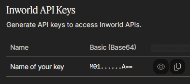

Doublage par synthèse vocale
Le doublage ElevenLabs utilise la même clé que la transcription ; si la clé est restreinte, elle doit autoriser Text to Speech: Access. Le clonage ElevenLabs (Instant Voice Cloning, sur une offre payante) demande en plus l’accès en écriture à Voices, pour créer, retrouver et supprimer les voix clonées. Le doublage Gemini utilise la clé Gemini, sans OAuth ni facturation, contrairement aux voix Gemini de Google Cloud décrites plus bas. Le doublage OpenAI utilise la clé OpenAI.
InWorld AI
Utilisé pour : doublage des pistes traduites.
- Créez un compte sur https://studio.inworld.ai.

- Ouvrez API Keys dans votre espace de travail.

- Cliquez sur Generate new key.

- Donnez-lui un nom facile à reconnaître. Choisissez Standard (sauf besoin particulier d’une clé
réservée au temps réel) et conservez les permissions nécessaires au doublage.

- Copiez Basic (Base64).
 La clé reste ensuite copiable depuis la liste.
La clé reste ensuite copiable depuis la liste.

- Collez-la dans Settings ▸ InWorld.
Offre gratuite : environ 70 minutes de doublage, une seule fois, avec licence commerciale. TTS Playground permet d’écouter les voix. Premiers pas.
Google Cloud Text-to-Speech
Utilisé pour : doublage des pistes traduites. Une seule connexion donne accès à deux familles de voix : les voix classiques (Standard, WaveNet, Neural2, Chirp/Chirp3-HD), via Cloud Text-to-Speech API, et les voix Gemini (Leda, Achird, Aoede…), multilingues et capables de suivre des consignes de style rédigées librement, via Vertex AI.
Ce fournisseur passe par OAuth, et non par une clé API : Vertex AI exige la permission
aiplatform.endpoints.predict, qu’une clé API ne fournit pas. Votre compte Google dispose de cette permission s’il a les droits de propriétaire
ou d’éditeur sur le projet.
- Créez ou choisissez un projet sur https://console.cloud.google.com. Les nouveaux comptes reçoivent 300 $ d’essai valables 90 jours. Un compte de facturation est malgré tout obligatoire.
- Dans APIs & Services ▸ Library, activez Cloud Text-to-Speech API et, pour Gemini, Vertex AI API
(
aiplatform.googleapis.com), et non l’ancien AI Platform (ml.googleapis.com). Vertex AI n’est pas nécessaire si vous n’utilisez que les voix classiques. - Dans OAuth consent screen, choisissez External pour User type / Audience et ajoutez votre compte
aux Test users. Avec Internal, les comptes Gmail personnels sont refusés (
403: org_internal). - Dans Credentials ▸ Create credentials ▸ OAuth client ID, choisissez Desktop app et copiez
Client ID et Client secret. Le type Desktop app est nécessaire pour la connexion locale
http://127.0.0.1, comme pour Google Sheets. - Dans Text-to-Speech, choisissez Google Cloud, collez ces deux valeurs, puis Connect…. Connectez-vous dans le navigateur. L’avertissement « application non vérifiée » est normal en mode Testing : choisissez Continue. Le projet utilisé pour le quota et la facturation est déduit du Client ID. Les identifiants et le refresh token restent dans les préférences de cet ordinateur.
Choisissez ensuite une voix. Les voix classiques s’affichent sous la forme Tier Leaf (locale), par exemple
Neural2 A (fr-FR) ; les voix Gemini sous la forme Name · Gemini, sans filtre de langue puisqu’elles sont
multilingues. Lorsqu’une voix Gemini est sélectionnée, le bouton bulle voice direction devient actif : décrivez le ton voulu, par exemple
really sad, close to mental breakdown. Cette indication accompagne chaque ligne.
Les voix classiques puisent dans le quota mensuel de Cloud TTS (environ 1 M de caractères en Neural2/WaveNet et 4 M en Standard). Les voix Gemini et Chirp sont facturées via Vertex AI, à un autre tarif : fixez une alerte de budget. Tarifs.
Azure AI Speech
Utilisé pour : doublage avec des voix neuronales multilingues. Fonctionne avec une clé d’abonnement et une région, sans OAuth.
Créez un compte sur https://azure.microsoft.com/free. Une carte bancaire sert à vérifier votre identité, mais l’offre F0 plafonne l’usage au lieu de le facturer : rien n’est prélevé.
Dans https://portal.azure.com, cliquez sur Create a resource, recherchez Speech et choisissez la tuile Speech publiée par Microsoft (bouton Create, et non une offre Marketplace Subscribe). Renseignez l’abonnement, le groupe de ressources, la Region, le nom et Pricing tier F0 (free), puis Review + create. Notez la région.
Une fois la ressource déployée, ouvrez Keys and Endpoint, copiez KEY 1 et notez Location/Region (
westeurope, par exemple).Collez la clé dans Settings ▸ Azure Speech. Dans Text-to-Speech, choisissez Azure et la même région.
La clé et la région doivent venir de la même ressource, sinon Azure répond
401. Indiquez le code court (westeurope,eastus), pas le nom affiché comme « West Europe ».
F0 : environ 0,5 M de caractères de voix neuronales par mois, pour l’évaluation uniquement. Pour exploiter l’audio commercialement, il faut une ressource S0 payante avant de doubler un jeu publié. Tarifs.